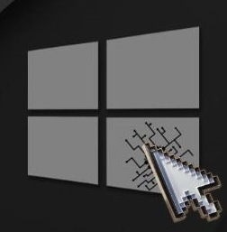
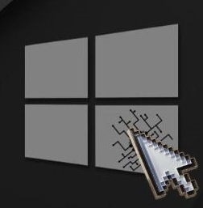
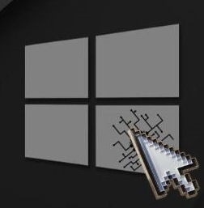
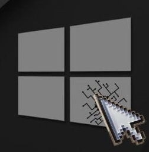

Desde hace años, soy informático y usuario del sistema operativo Windows.
Al igual que muchos lectores de este texto, fui testigo del increíble rendimiento y optimización que ofrecía Windows XP, la primera versión que utilicé de joven.
Posteriormente, Windows 7 se convirtió para mí en el mejor sistema operativo que Microsoft ha lanzado hasta la fecha. Su fluidez, rapidez y estabilidad eran admirables, cualidades que, en mi opinión, no se encuentran en las versiones actuales de Windows.
En contraste, percibo que las versiones más recientes de Windows carecen de un enfoque claro, intentando abarcar múltiples campos y plataformas sin centrarse en la optimización de ninguna en particular. Se añaden funciones y características con el objetivo de ampliar la compatibilidad y "mejorar" la experiencia de uso, tomando como claro ejemplo Windows 11. El resultado final es un sistema operativo moderno en estética y funcionalidad, pero menos optimizado que sus predecesores. Comparo Windows con un edificio antiguo al que se le han añadido plantas adicionales sin reestructurar sus cimientos. Además, la falta de respeto hacia la privacidad y la libertad del usuario es notable, limitando la elección sobre qué información compartir y qué elementos incluir en la experiencia del sistema operativo. También se restringe el acceso a hardware antiguo, fomentando la compra de equipos nuevos sin una justificación real.
Quiero destacar que esta es una reflexión personal y habrán quienes tengan una opinión contraria. Es importante reconocer las mejoras en seguridad y facilidad de uso del sistema operativo, como la actualización de drivers y paquetes del sistema, tareas que antes eran más complejas y que ahora se resuelven con unos pocos clics.
No obstante, con sus pros y contras, considero que Windows encierra un potencial limitado debido a la sobrecarga de servicios, componentes y aplicaciones (bloatware) de Microsoft y terceros. Estos elementos, que probablemente el usuario final no aprovecha, consumen recursos de manera innecesaria.
Impulsado por mi obsesión por el perfeccionismo en la optimización, fluidez, estabilidad y eficiencia de mis dispositivos, invertí un tiempo considerable en investigar métodos, ajustes y programas de optimización del sistema. Exploré configuraciones e incluso el propio código y estructura del sistema operativo para entender en profundidad su funcionamiento y lograr la máxima optimización del rendimiento en mi PC, intentando recuperar la experiencia satisfactoria que disfrutaba con Windows XP y 7.
Con el tiempo, y no conforme con solo aplicar configuraciones personalizadas después de formatear, me introduje en el mundo de la programación y desarrollé este proyecto personal. Quise reconvertir mi sistema operativo favorito, y el de mis familiares y amigos, en una versión objetiva en funcionalidad y rendimiento. El enfoque principal se orienta estrictamente hacia el mínimo consumo de recursos y el máximo rendimiento posible, sin comprometer la estabilidad ni la seguridad del sistema.
De este concepto nació WinSlim, una versión de Windows pensada para aquellos que, al igual que yo, desean disfrutar de un sistema operativo moderno, útil y eficaz para todas sus tareas frecuentes. WinSlim ofrece un entorno responsivo, minimalista e intuitivo, similar al funcionamiento de Windows en sus versiones anteriores, sin discriminación por hardware ni requisitos mínimos absurdos. Además, mejora la privacidad al evitar la recopilación excesiva de datos y elimina funciones innecesarias y aplicaciones en segundo plano que consumen recursos de manera arbitraria.
WinSlim es ideal tanto para gamers y entusiastas que cuentan con un hardware potente y buscan exprimirlo al máximo, como para usuarios con ordenadores portátiles o de sobremesa con recursos limitados. Aunque WinSlim no hará milagros ni logrará lo imposible (no obtendrás 60 fps estables en Cyberpunk con una Intel HD), te garantizo que tu experiencia en Windows mejorará notablemente, sin importar el equipo que utilices.
Este sistema cuenta con mejoras para gráficas dedicadas, optimizaciones para equipos con HDD, poca memoria RAM y CPUs modestos, gestionando los recursos de manera más eficiente y libre de características y funciones en segundo plano y bloatware. Además, es libre de telemetría y minimiza la información recopilada por terceros, salvaguardando la privacidad del usuario y eliminando el impacto en el rendimiento que esto generaba.
Christian Luis Gonzalez, Autor de WinSlim